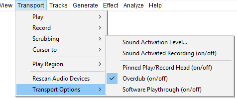

Transport Menu: Transport Options
- Click, or hover, on any menu item in the image to read about that command. Skip the image
- 
Sound Activation Level...
Sets the activation level above which Sound Activated Recording will record.
Sound Activated Recording (on/off)
Toggles on and off the Sound Activated Recording option in Recording Preferences. This option can be useful to save disk space when recording an intermittent input, such as a call recording system.
When turned on (indicated by the check mark in the menu item), press the Record button in Transport Toolbar to start the Sound Activated Recording session. Recording will now occur whenever the received input is above the Sound Activation Level you specify (see the menu item below). Recording will pause whenever the received input falls below that level. Press the Stop button to stop the recording session.
Sound Activated Recording can be combined with Timer Record to set the start and end time of a Sound Activated recording.
Pinned Play/Record Head (on/off)
You can change Audacity to play and record with a fixed head pinned to the center of the Timeline. In this mode the head remains static and the waveforms will move as the audio is played or recorded.
Clicking on this command cause the triange button at the left of the Timeline to change to a drawing-pin. This indicates that the play or record head is now pinned to the center of the Timeline and when playing or recording takes place the waveform will move continuously under the fixed head. Clicking on this command againg will revert to unpinned play and record head and the drawingpin changes back to the triangle.
See this section on the Timeline page for more details.
Overdub (on/off)
Toggles on and off the Overdub option in Recording Preferences.
When turned on (indicated by the check mark in the menu item), any existing audio tracks will play when you start recording, according to the state of their Mute/Solo buttons.
Overdub is "on" by default in Audacity.
Software Playthrough (on/off)
Toggles on and off the Software Playthrough option in Recording Preferences.
When turned on (indicated by the check mark in the menu item), input being recorded will play, but there will be a noticeable delay (latency) before the input is heard. For some examples of setting up equipment to record without playthrough latency, see this Tutorial about Recording overdubs.
| Software Playthrough must be unchecked when recording computer playback because it will create feedback echoes. |